整體學習路徑
前 8 步建立 Verilog / RTL 基礎；第 9～13 步進入 synthesis 與 standard-cell timing model；第 14 步將所有概念整合回完整數位 IC 設計流程。
1–3 基礎描述→
4–7 Behavioral RTL→
8 可合成 RTL→
9 Synthesis→
10–13 Standard Cell & Timing→
14 Digital IC Flow
使用方式：可依序從 Step 01 開始，也可以直接點選你目前上課進度的主題。所有頁面都使用相同風格，方便連續閱讀。
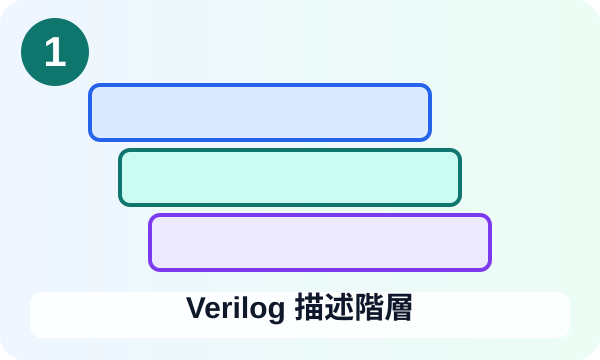
STEP 01
Verilog 描述階層
Structural / Dataflow / Behavioral / RTL
開啟教學網頁 →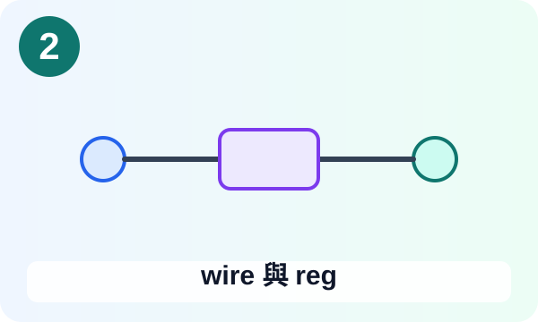
STEP 02
wire 與 reg
基本資料型別與 driver 概念
開啟教學網頁 →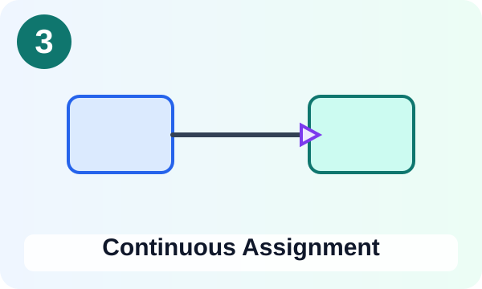
STEP 03
Continuous Assignment
assign 與組合邏輯
開啟教學網頁 →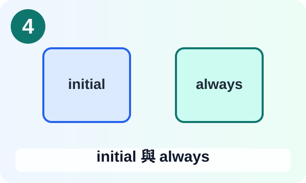
STEP 04
initial 與 always
程序區塊與事件驅動
開啟教學網頁 →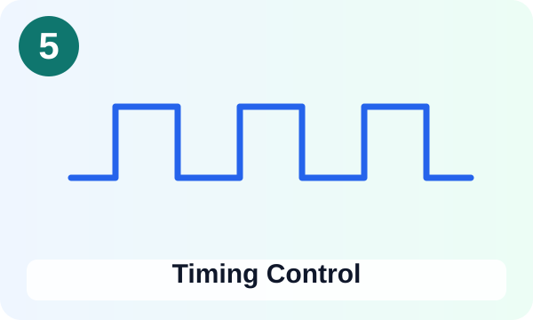
STEP 05
Timing Control
#delay、@、posedge、negedge
開啟教學網頁 →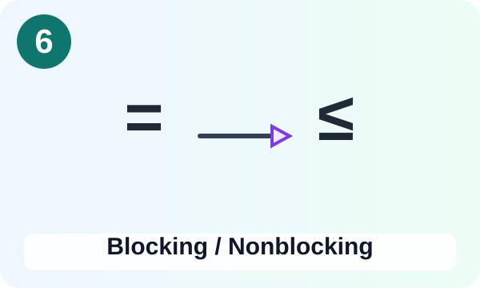
STEP 06
Blocking / Nonblocking
= 與 <= 的模擬語意
開啟教學網頁 →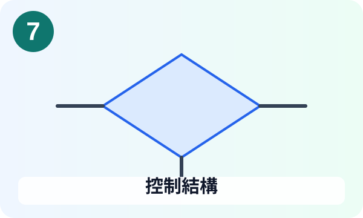
STEP 07
控制結構
if / case / casex / casez / for
開啟教學網頁 →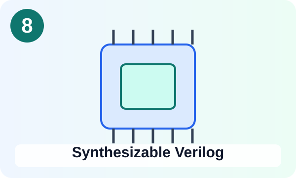
STEP 08
Synthesizable Verilog
可合成子集與 RTL coding style
開啟教學網頁 →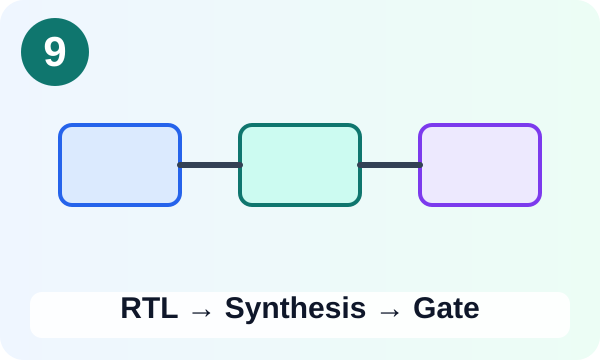
STEP 09
RTL → Synthesis → Gate
從 RTL 到 Gate-Level Netlist
開啟教學網頁 →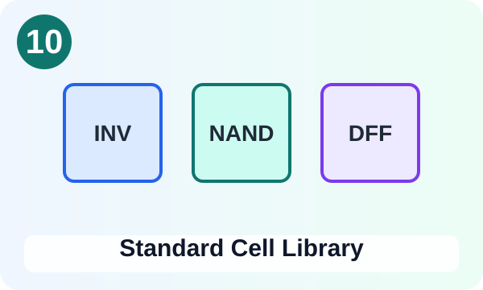
STEP 10
Standard Cell Library
標準元件庫與 drive strength
開啟教學網頁 →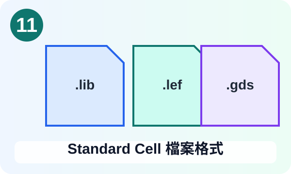
STEP 11
Standard Cell 檔案格式
.lib / .lef / .v / .gds / .cdl
開啟教學網頁 →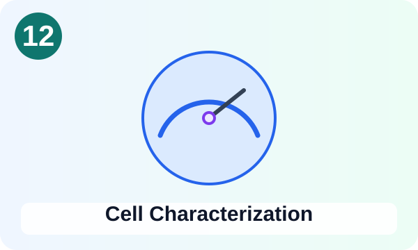
STEP 12
Cell Characterization
SPICE、PVT、delay、slew、power
開啟教學網頁 →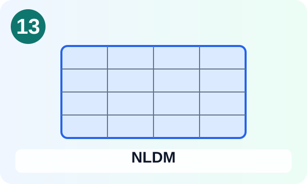
STEP 13
NLDM
Input Slew × Output Load → Delay
開啟教學網頁 →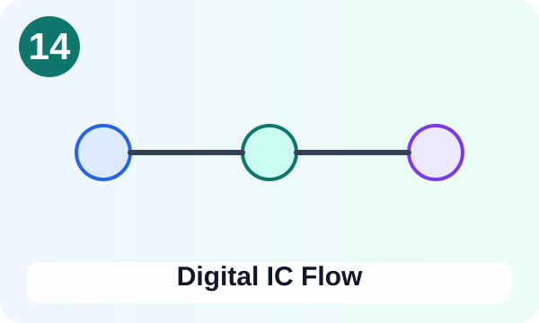
STEP 14
Digital IC Flow
Specification → GDSII / Fabrication
開啟教學網頁 →